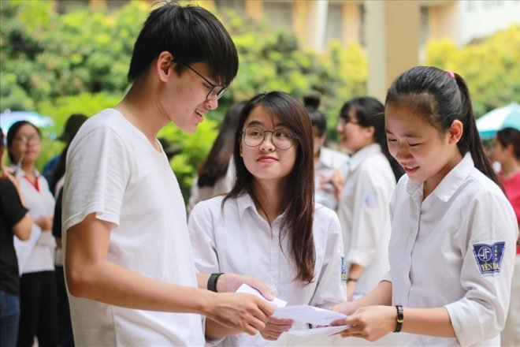
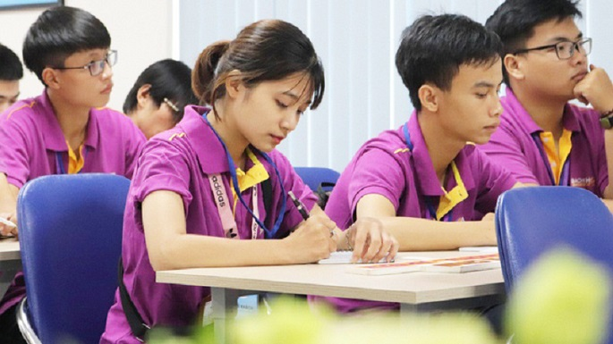
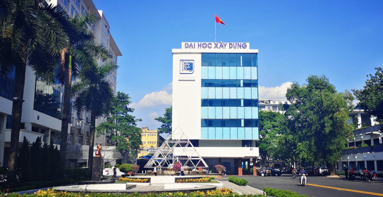

TIN TỨC Học sinh TP.HCM không nhất thiết phải làm bài kiểm tra Thay vì bài kiểm tra, giáo viên có thể đánh giá học sinh qua hoạt động nghiên cứu khoa học, các bài thuyết trình và hoạt động trên lớp. Sở GD&ĐT TP.HCM vừa có văn bản về thực hiện đổi mới công tác xây dựng kế hoạch giáo dục, đổi mới dạy học và kiểm tra đánh giá năm học 2019-2020. Theo đó, các trường cần thực hiện đánh giá thường xuyên đối với học sinh bằng hình thức khác nhau như quan sát hoạt động trên lớp, qua hồ sơ học tập, vở hoặc sản phẩm học tập, kết quả thực hiện một dự án, nghiên cứu khoa học kỹ thuật... Giáo viên có thể sử dụng các hình thức đánh giá nói trên thay cho bài kiểm tra như hiện nay. Hướng dẫn làm hồ sơ thi tốt nghiệp THPT và xét tuyển ĐH 2020  Năm nay, do dịch bệnh Covid-19 nên lịch nộp hồ sơ tham dự kỳ thi tốt nghiệp THPT 2020 được lùi đến tháng 6, cụ thể từ ngày 15-30/6. 15 Sau đó, các sở GD-ĐT và điểm thu nhận hồ sơ sẽ tiếp nhận hồ sơ đăng ký dự thi của thí sinh, nhập thông tin đăng dự thi và đăng ký xét tuyển đợt 1 của thí sinh vào cơ sở dữ liệu của Cổng thông tin tuyển sinh của Bộ GD-ĐT. Khi làm thủ tục dự thi, thí sinh phải có Chứng minh nhân dân. Trong trường hợp không có hoặc bị mất thì phần mềm QLT sẽ gán cho thí sinh một mã số 12 ký tự để quản lý. Những thí sinh muốn điều chỉnh nguyện vọng đăng ký xét tuyển đại học, cao đẳng thì phải đăng ký số điện thoại, email của mình khi đăng ký dự thi. Sau ngày 30/6, thí sinh không được thay đổi Điểm thi và các thông tin về bài thi/môn thi đã đăng ký Tư vấn hướng nghiệp: Học ngành gì để không thất nghiệp?  Thất nghiệp sau đại học đang trở thành nỗi lo lắng, trăn trở của nhiều bạn trẻ. Không ít cử nhân "vỡ mộng" sau khi cầm tấm bằng đại học vì ngành nghề mình theo học sau 4 năm tốt nghiệp đã giảm nhu cầu nhân lực hoặc không đáp ứng nhu cầu của nhà tuyển dụng, đành phải chấp nhận làm việc trái với ngành nghề đã chọn. Vì vậy trong mùa tuyển sinh 2020, nhiều thí sinh thắc mắc nên đăng ký chọn ngành nào dễ tìm được việc làm sau 4 năm học, nên chọn ngành theo sở thích hay cơ hội việc làm trong tương lai? Kênh Tuyển Sinh tổng hợp những thông tin hữu ích giải đáp những thắc mắc liên quan giúp các bạn trẻ lựa chọn ngành nghề phù hợp. Dạy và học trực tuyến thế nào cho hiệu quả Theo TS Phạm Công Hiệp, Khoa Kinh doanh và Quản trị, Đại học RMIT Việt Nam, một trong những nhiệm vụ quan trọng nhất đối với người dạy là chuẩn bị bài giảng hội tụ đủ ba yếu tố của sự “hiện diện trực tuyến”, gồm người dạy, yếu tố xã hội và nhận thức. TS Hiệp cho rằng, để dạy và học trực tuyến hiệu quả, trước tiên cần hiểu đúng về khái niệm “học trực tuyến”. Đây là phương thức học thông qua máy vi tính hay thiết bị thông minh được kết nối mạng internet. Trên nền tảng này, người học và người dạy kết nối với nhau qua các phần mềm gọi thoại (voice call), hình thoại (video call) để trao đổi trực tiếp, chia sẻ các tài liệu học tập, giải đáp các vướng mắc mà người học đang gặp phải,... Đại học Xây dựng hỗ trợ sinh viên 5 tỷ, lùi thời hạn thu học phí do dịch Covid-19  Do những diễn biến phức tạp của dịch Covid-19 khiến nhiều sinh viên gặp khó khăn, trường Đại học Xây dựng quyết định dành 5 tỷ để hỗ trợ sinh viên và lùi thời hạn thu học phí căn cứ theo tình hình dịch bệnh. Trước những diễn biến phức tạp của dịch Covid-19, Thủ tướng Chính phủ đã đồng ý xếp Hà Nội và một số tỉnh, thành phố vào nhóm nguy cơ cao, tiếp tục thực hiện nghiêm chỉ thị 16, cách ly xã hội đến ngày 22-4 và có thể kéo dài hơn nữa nếu tình trạng lây nhiễm chưa được kiểm soát. Dịch bệnh đã khiến cho rất nhiều sinh viên lâm vào tình cảnh khó khăn, bị mất việc làm thêm, không đủ trang thiết bị phục vụ cho việc học trực tuyến, nhất là với những sinh viên ở nông thôn, vùng sâu, vùng xa. Trước tình hình này, các trường Đại học tại Hà Nội đã triển khai nhiều phương án hỗ trợ sinh viên như cung cấp trang thiết bị, giảm học phí, tặng quà từ thiện,...